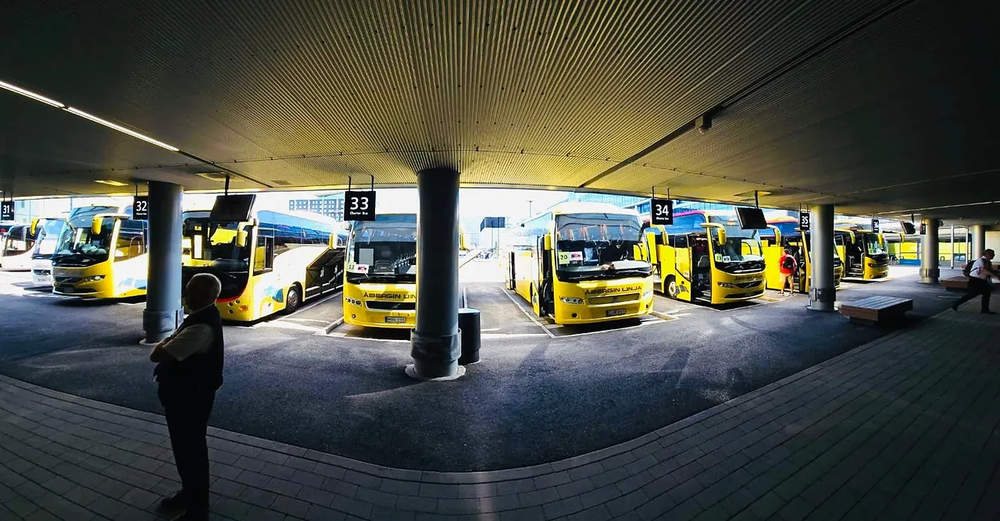
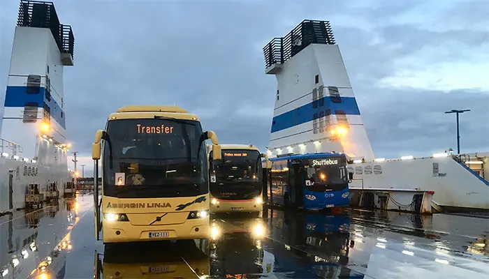
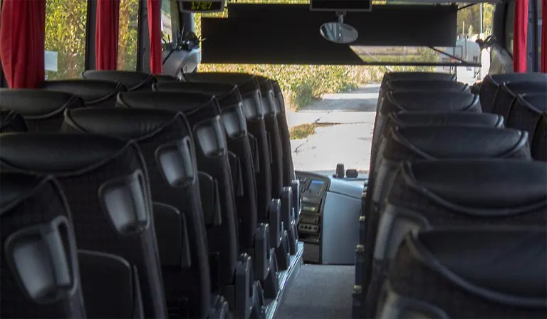
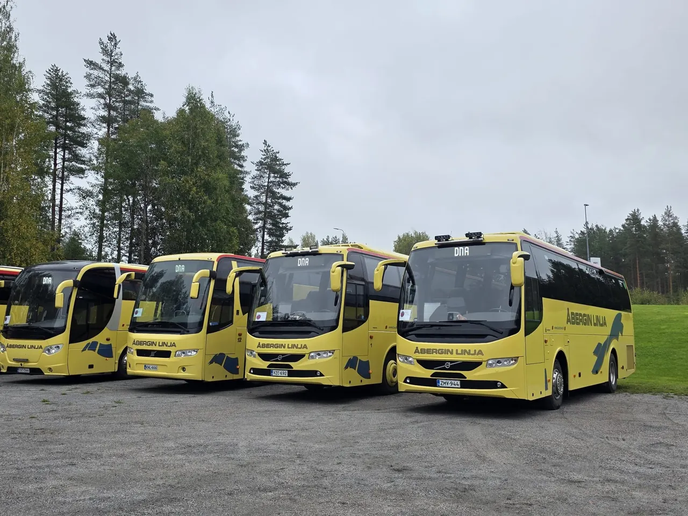
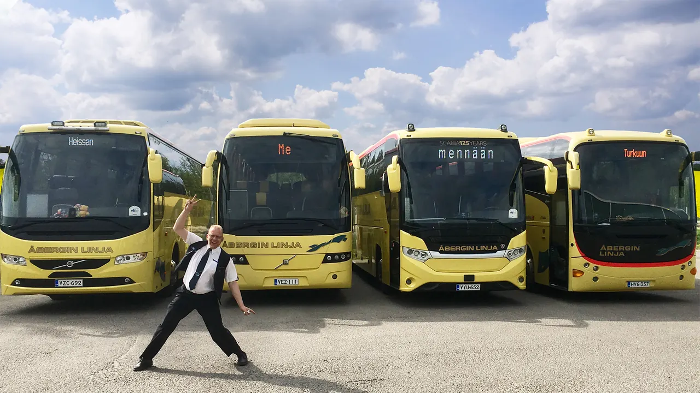

Esbo · Helsingfors · Finland
Beställningstrafik med buss
Åbergin Linja är ett familjeföretag i Esbo i Södra Finland. Vi har kört busstrafik sedan 1953.

Tjänster
Vi erbjuder er
Vi kör också lokaltrafik i HRT-området. Tidtabeller och rutter finns på hsl.fi.
Företags-, förenings- och skolresor
Flygplats-, hotell- och konferenstransfer
Shuttleservice
Rundturer, även med guide
Tre steg
Så här beställer ni
Skicka en förfrågan
Berätta rutten, datumet, gruppens storlek och hur vi når er. Vid flygplatstransfer, ange också flygnumret och ankomsttiden.
Få en offert per e-post
Försäljningen svarar med en skriftlig offert för er resa.
Kontoret är öppet vardagar 8–16
Bekräfta bokningen
Godkänn offerten och ange faktureringsuppgifterna. Bokningen är slutlig när försäljningen har bekräftat den.

Bussar
Från minibuss till stor turistbuss
Vi erbjuder moderna bussar med upp till 60 platser och vänliga chaufförer.
13–16 platser
Minibuss
30–34 platser
Midibuss
49 platser
Honka-buss
49–54 platser
Turistbuss
57–60 platser
Stor turistbuss
Utrustningen varierar mellan fordonen. Berätta vad er grupp behöver, så bekräftar försäljningen det i offerten. Större grupper reser med flera bussar samtidigt.
Bra att veta
Priser och praktisk information
Exempelpriser i Helsingfors
En kort transfer med minibuss kostar under 200 euro och med stor buss från 200–300 euro. En rundtur på några timmar i Helsingfors kostar cirka 350–500 euro.
Priserna är exempel som företaget har publicerat. Det exakta priset, och vad som ingår, står i offerten.
Vad påverkar priset
Resans längd och tidsåtgång, antalet passagerare och tidpunkten för resan.
Flygplatstransfer
Ange flygnumret, ankomsttiden, mängden bagage och var chauffören ska möta gruppen.
Tillgänglig transport
Stadsbussar finns för evenemangstransporter och tillgängliga transporter.
Beskriv behovet i förfrågan, så bekräftar försäljningen ett lämpligt fordon.
Brådskande ärenden
Jour för beställningstrafik 0400-505 713
Journumret är för brådskande ärenden. Offertförfrågningar sköts av försäljningen.
Om det korta formuläret
Formuläret på den här sidan är en kort förfrågan. Den stegvisa förfrågan med ruttens längd och publicerad prisnivå finns på de finska sidorna.

Referenser
Ungdoms-EM i friidrott i Esbo
Sommaren 2023 transporterade vi 1200 idrottare och 400 andra lagmedlemmar under drygt en vecka. Flygplatstransporterna sköttes med nästan 20 bussar.
Transporterna från hotellen till tävlingsplatsen var noggrant tidsatta.
Enligt Hanne Pirkola, generalsekreterare för tävlingarna, gav idrottarna mycket positiv respons på transporterna.

Hållbarhet
Hållbart resande
År 2021 blev Åbergin Linja det allra första bussbolaget som fick märket Sustainable Travel Finland.
Vår kvalitets- och miljöpolicy uppfyller kraven i standarderna ISO 9001 och ISO 14001. Vi har även certifikatet ISO 45001 för arbetshälsa och säkerhet.